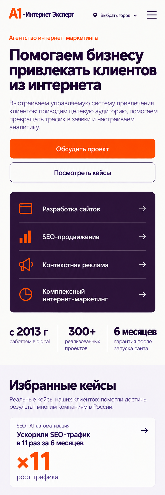
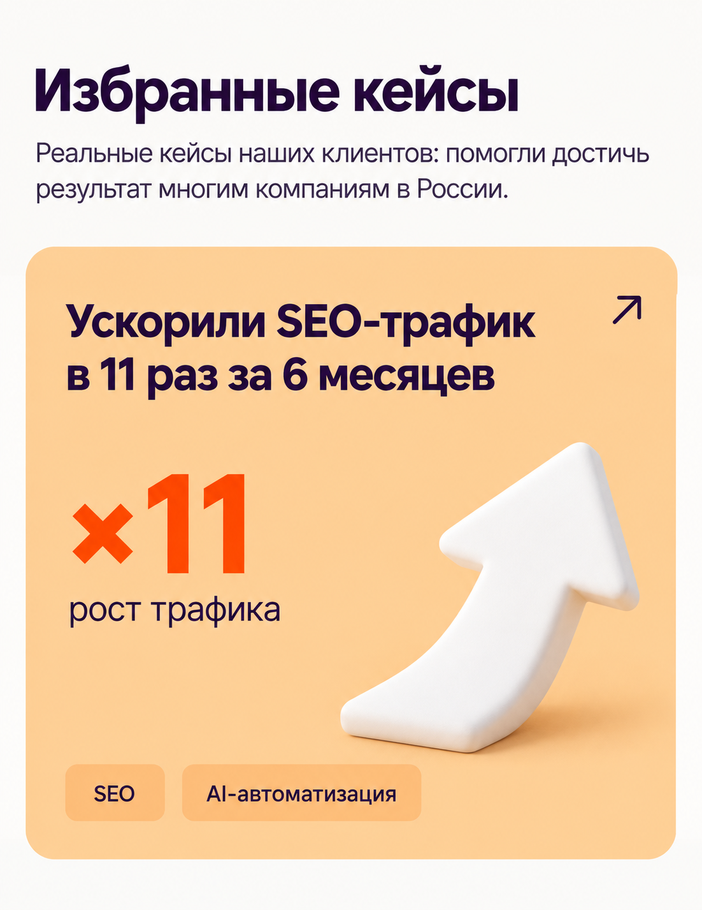
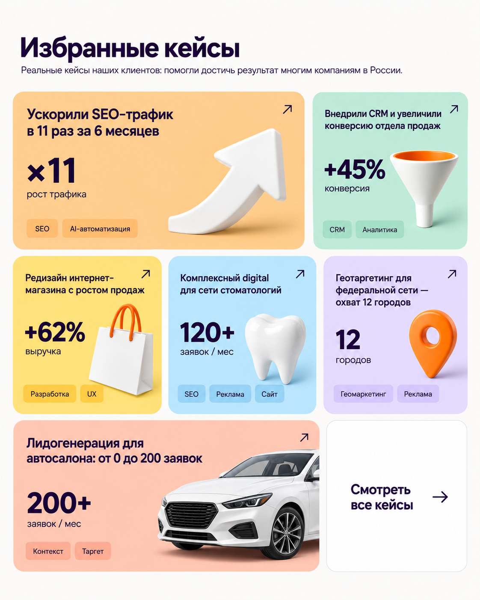
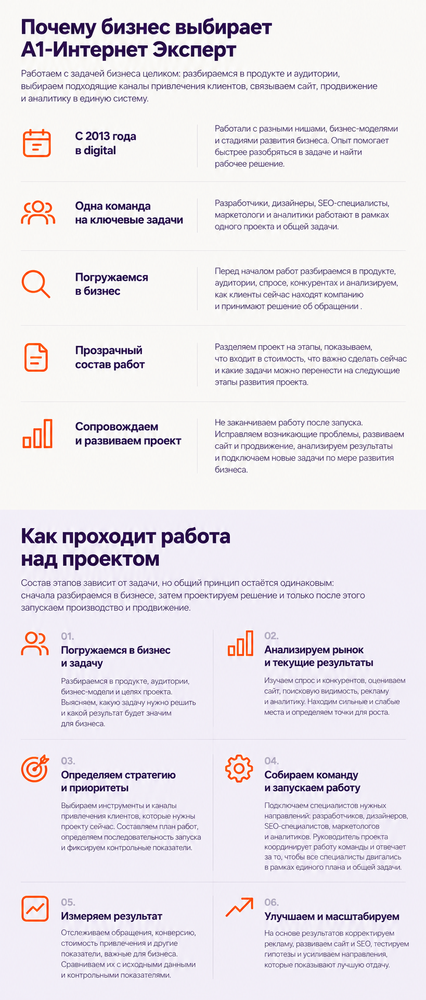
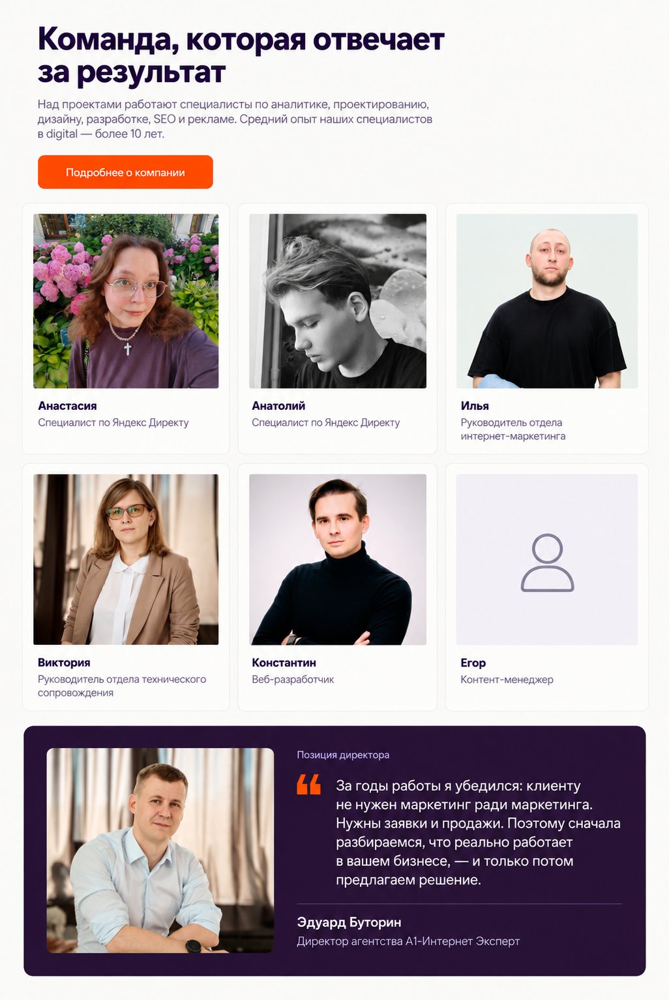
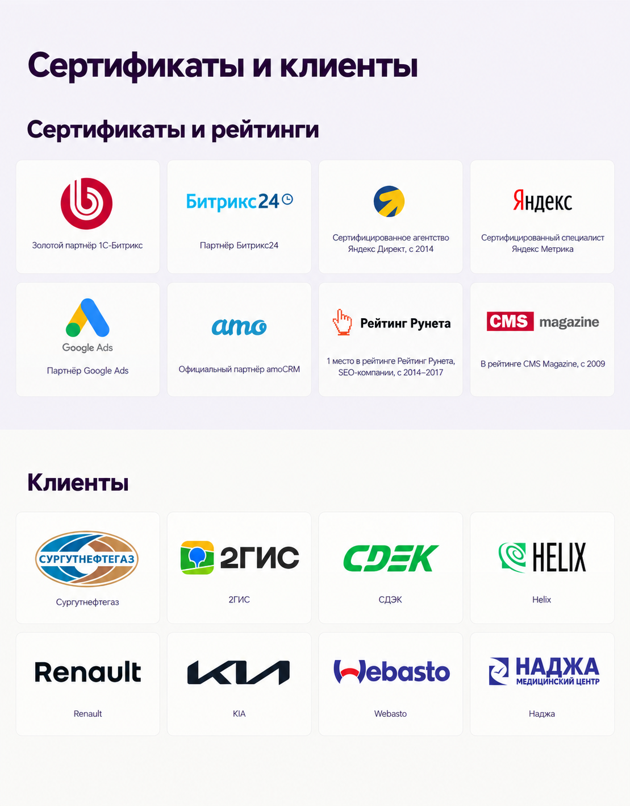
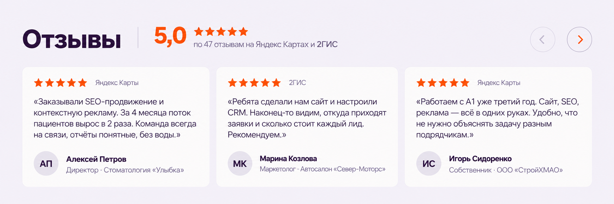
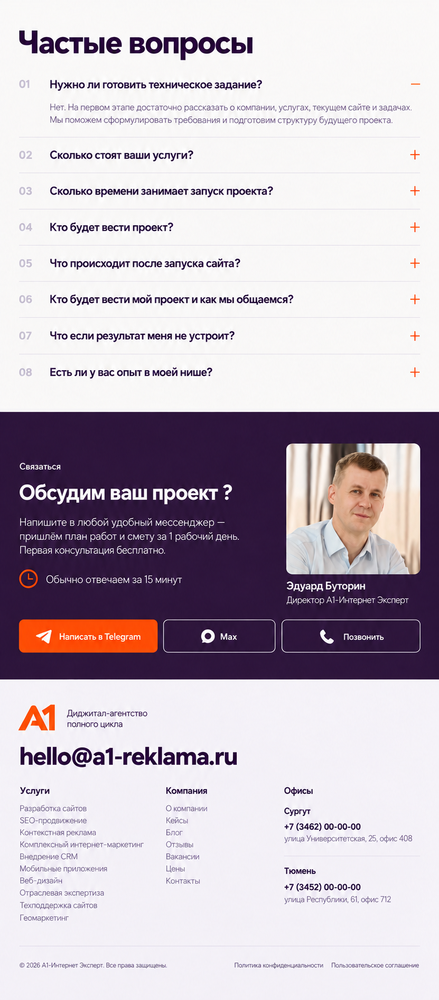
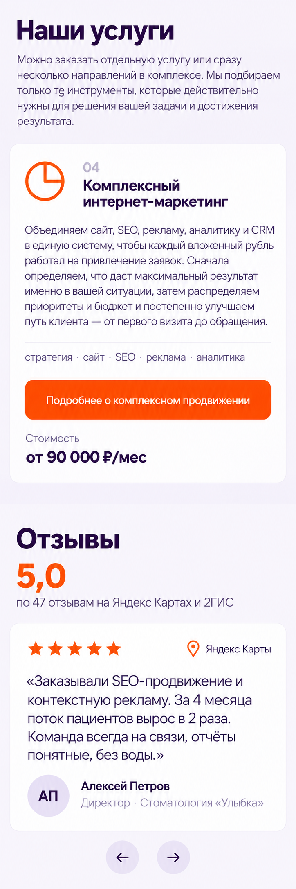
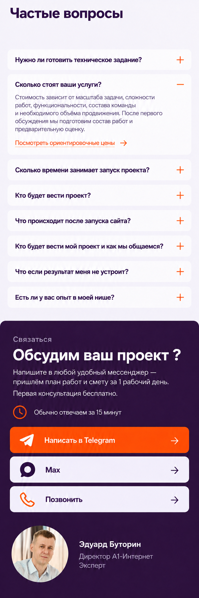

Начало страницы и кейс


Полный макет для компьютера и ключевые мобильные композиции.
Не удалось загрузить часть макета. Обновите страницу или откройте изображение отдельно.


Можно заказать отдельную услугу или сразу несколько направлений в комплексе. Мы подбираем только те инструменты, которые действительно нужны для решения вашей задачи и достижения результата.
Объединяем сайт, SEO, рекламу, аналитику и CRM в единую систему, чтобы каждый вложенный рубль работал на привлечение заявок.
Сначала определяем, что даст максимальный результат именно в вашей ситуации, затем распределяем приоритеты и бюджет и постепенно улучшаем путь клиента — от первого визита до обращения.
Продвижение приводит потенциальных клиентов, сайт помогает им разобраться в предложении и обратиться, а аналитика показывает, что происходит дальше и какие каналы дают результат.
Используем SEO, контекстную рекламу, карты и другие подходящие каналы. Оцениваем количество и качество привлечённого трафика.
Проектируем понятную структуру, страницы услуг и удобные способы связи. Человеку проще разобраться в предложении, выбрать подходящий вариант и обратиться в компанию.
Настраиваем цели, телефонию, CRM и отчётность. Видим обращения, конверсию, стоимость заявки и, где это возможно, продажи по каждому каналу.
Видим, где теряются обращения, что нужно улучшить и куда выгоднее направлять бюджет для дальнейшего роста.





Три фрагмента показывают, как меняются первый экран, раздел услуг, отзыв, FAQ и контактный блок.


Можно заказать отдельную услугу или сразу несколько направлений в комплексе. Мы подбираем только те инструменты, которые действительно нужны для решения вашей задачи и достижения результата.
Объединяем сайт, SEO, рекламу, аналитику и CRM в единую систему, чтобы каждый вложенный рубль работал на привлечение заявок.
Сначала определяем, что даст максимальный результат именно в вашей ситуации, затем распределяем приоритеты и бюджет и постепенно улучшаем путь клиента — от первого визита до обращения.


Открыть PNGЗдесь доступны полные тексты, включая все шесть отзывов и восемь ответов FAQ. На макете FAQ показан с одним открытым ответом.
Разрабатываем корпоративные сайты, интернет-магазины, лендинги и личные кабинеты под задачи бизнеса: от структуры и прототипа до запуска, интеграций и дальнейшей поддержки. Работаем на 1С-Битрикс, WordPress, Tilda и Laravel.
Комплексно продвигаем сайты в Яндексе и Google: собираем семантику, усиливаем техническую оптимизацию, контент, перелинковку и аналитику, чтобы сайт рос не только по позициям, но и по заявкам.
Настраиваем и ведём контекстную и таргетированную рекламу в Яндекс Директе, ВКонтакте и Telegram Ads: от запуска и тестов до ретаргетинга, оптимизации и сквозной аналитики. Работаем на заявки, продажи и понятную стоимость лида.
За стратегию продвижения, реализацию и аналитику отвечает одна команда A1. Все специалисты работают по общему плану, а инструменты дополняют друг друга и решают одну задачу — привлекать больше целевых обращений.
Внедряем amoCRM и Битрикс24: настраиваем воронки, автоматизации и интеграции с сайтом, телефонией и мессенджерами, обучаем команду — чтобы заявки не терялись, а работа отдела продаж была прозрачной и управляемой.
Разрабатываем мобильные приложения для iOS и Android: от проектирования и дизайна до разработки, тестирования и публикации. Делаем нативные и кроссплатформенные решения под задачи бизнеса.
Проектируем интерфейсы для сайтов, лендингов, личных кабинетов и приложений: продумываем структуру, сценарии, прототипы и дизайн, чтобы пользователю было удобно, понятно и легко совершить целевое действие.
Маркетинг и разработка для конкретных ниш: стоматологии, автосалоны, медицинские и косметологические клиники, онлайн-курсы, новые ЖК.
Берём сайты на сопровождение: дорабатываем функционал, обновляем CMS и контент, следим за стабильностью, безопасностью и резервным копированием, чтобы проект работал без сбоев и не терял заявки.
Усиливаем локальную видимость бизнеса в Яндекс Картах, 2ГИС и Google: оформляем и развиваем карточки, подключаем георекламу и следим за актуальностью информации.
Бесплатная консультация — подберём подходящие услуги под вашу задачу.
Выстраиваем управляемую систему привлечения клиентов: приводим целевую аудиторию, помогаем превращать трафик в заявки и настраиваем аналитику.
Реальные кейсы наших клиентов: помогли достичь результат многим компаниям в России.
Можно заказать отдельную услугу или сразу несколько направлений в комплексе. Мы подбираем только те инструменты, которые действительно нужны для решения вашей задачи и достижения результата.
Проектируем и создаём корпоративные сайты, лендинги, интернет-магазины и сервисы. Сразу учитываем структуру под SEO, рекламные страницы, мобильную версию, аналитику и дальнейшее развитие проекта.
Развиваем структуру, контент и техническую основу сайта, чтобы он охватывал поисковый спрос и регулярно привлекал целевых посетителей из Яндекса и Google.
Настраиваем и ведём рекламу в Яндекс Директе. Подбираем поисковые запросы, создаём объявления и посадочные страницы, настраиваем аналитику, чтобы оценивать не только клики, но и реальные обращения.
Объединяем сайт, SEO, рекламу, аналитику и CRM в единую систему, чтобы каждый вложенный рубль работал на привлечение заявок. Сначала определяем, что даст максимальный результат именно в вашей ситуации, затем распределяем приоритеты и бюджет и постепенно улучшаем путь клиента — от первого визита до обращения.
Продвижение приводит потенциальных клиентов, сайт помогает им разобраться в предложении и обратиться, а аналитика показывает, что происходит дальше и какие каналы дают результат.
Используем SEO, контекстную рекламу, карты и другие подходящие каналы. Оцениваем количество и качество привлечённого трафика.
Проектируем понятную структуру, страницы услуг и удобные способы связи. Человеку проще разобраться в предложении, выбрать подходящий вариант и обратиться в компанию.
Настраиваем цели, телефонию, CRM и отчётность. Видим обращения, конверсию, стоимость заявки и, где это возможно, продажи по каждому каналу.
Получаем управляемую систему привлечения клиентов.
Видим, где теряются обращения, что нужно улучшить и куда выгоднее направлять бюджет для дальнейшего роста.
Работаем с задачей бизнеса целиком: разбираемся в продукте и аудитории, выбираем подходящие каналы привлечения клиентов, связываем сайт, продвижение и аналитику в единую систему.
Работали с разными нишами, бизнес-моделями и стадиями развития бизнеса. Опыт помогает быстрее разобраться в задаче и найти рабочее решение.
Разработчики, дизайнеры, SEO-специалисты, маркетологи и аналитики работают в рамках одного проекта и общей задачи.
Перед началом работ разбираемся в продукте, аудитории, спросе, конкурентах и анализируем, как клиенты сейчас находят компанию и принимают решение об обращении.
Разделяем проект на этапы, показываем, что входит в стоимость, что важно сделать сейчас и какие задачи можно перенести на следующие этапы развития проекта.
Не заканчиваем работу после запуска. Исправляем возникающие проблемы, развиваем сайт и продвижение, анализируем результаты и подключаем новые задачи по мере развития бизнеса.
Состав этапов зависит от задачи, но общий принцип остаётся одинаковым: сначала разбираемся в бизнесе, затем проектируем решение и только после этого запускаем производство и продвижение.
Разбираемся в продукте, аудитории, бизнес-модели и целях проекта. Выясняем, какую задачу нужно решить и какой результат будет значим для бизнеса.
Изучаем спрос и конкурентов, оцениваем сайт, поисковую видимость, рекламу и аналитику. Находим сильные и слабые места и определяем точки для роста.
Выбираем инструменты и каналы привлечения клиентов, которые нужны проекту сейчас. Составляем план работ, определяем последовательность запуска и фиксируем контрольные показатели.
Подключаем специалистов нужных направлений: разработчиков, дизайнеров, SEO-специалистов, маркетологов и аналитиков. Руководитель проекта координирует работу команды и отвечает за то, чтобы все специалисты двигались в рамках единого плана и общей задачи.
Отслеживаем обращения, конверсию, стоимость привлечения и другие показатели, важные для бизнеса. Сравниваем их с исходными данными и контрольными показателями.
На основе результатов корректируем рекламу, развиваем сайт и SEO, тестируем гипотезы и усиливаем направления, которые показывают лучшую отдачу.
Над проектами работают специалисты по аналитике, проектированию, дизайну, разработке, SEO и рекламе. Средний опыт наших специалистов в digital — более 10 лет.
Позиция директора
За годы работы я убедился: клиенту не нужен маркетинг ради маркетинга.
Нужны заявки и продажи. Поэтому сначала разбираемся, что реально работает в вашем бизнесе, — и только потом предлагаем решение.
Сургутнефтегаз · 2ГИС · СДЭК · Helix · Renault · KIA · Webasto · Наджа
«Заказывали SEO-продвижение и контекстную рекламу. За 4 месяца поток пациентов вырос в 2 раза. Команда всегда на связи, отчёты понятные, без воды.»
«Ребята сделали нам сайт и настроили CRM. Наконец-то видим, откуда приходят заявки и сколько стоит каждый лид. Рекомендуем.»
«Работаем с A1 уже третий год. Сайт, SEO, реклама — всё в одних руках. Удобно, что не нужно объяснять задачу разным подрядчикам.»
«Запустили таргет в ВК и лендинг на процедуры. Записи выросли на 60%, а стоимость заявки снизилась вдвое. Очень довольна результатом.»
«Сделали сайт ЖК с шахматкой и 3D-туром. Настроили сквозную аналитику до брони. Теперь точно знаем, какой канал приносит покупателей.»
«Перенесли курсы на новую платформу, сделали автоворонку и интеграцию с amoCRM. Продажи курсов выросли на 40% уже в первый месяц.»
Нет. На первом этапе достаточно рассказать о компании, услугах, текущем сайте и задачах. Мы поможем сформулировать требования и подготовим структуру будущего проекта.
Стоимость зависит от масштаба задачи, сложности работ, функциональности, состава команды и необходимого объёма продвижения. После первого обсуждения мы подготовим состав работ и предварительную оценку.
Посмотреть ориентировочные ценыНебольшая задача может занять до недели. Разработка многостраничного сайта, интернет-магазина или сложного сервиса обычно требует больше времени. Точные сроки фиксируются после анализа и проектирования.
За коммуникацию отвечает руководитель проекта. К работе подключаются необходимые специалисты: аналитик, дизайнер, разработчик, SEO-специалист, маркетолог или специалист по рекламе.
Мы тестируем сайт, исправляем технические ошибки в рамках гарантии, подключаем продвижение и при необходимости продолжаем развивать структуру, контент и функциональность.
У каждого проекта есть project-менеджер — ваш единый контакт с командой. Он собирает задачи, контролирует сроки, отчитывается о результатах. Связь — Telegram или email на ваше усмотрение, созвоны раз в 1–2 недели. За задачи отвечают штатные специалисты: разработчик, дизайнер, SEO-оптимизатор, маркетолог. Никаких субподрядов.
Мы работаем по этапам с фиксированными точками сдачи. На каждом этапе вы принимаете работу — если что-то не так, дорабатываем без доплат. По услугам с измеримым результатом (SEO, реклама) — еженедельные отчёты с метриками. Если по итогам 3 месяцев работы не видно движения по KPI — пересматриваем стратегию или возвращаем средства за непринятые этапы. В договоре прописано конкретно.
Скорее всего да. С 2013 года работали со стоматологиями, автосалонами, медклиниками, косметологией, ЖК, онлайн-курсами и промышленностью. Если ниши нет в портфолио — на брифе обсудим, как накопленная экспертиза переносится на вашу задачу.
Напишите в любой удобный мессенджер — пришлём план работ и смету за 1 рабочий день. Первая консультация бесплатно.